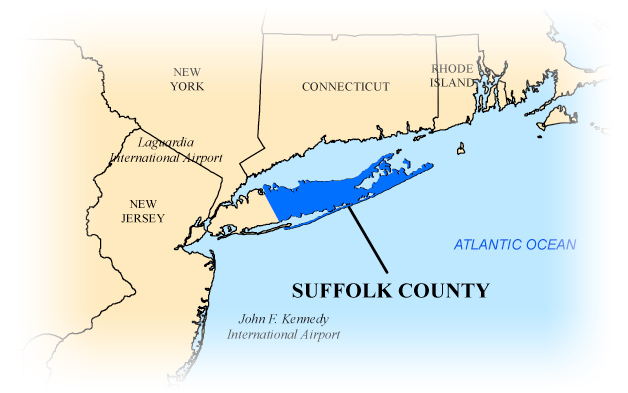

Suffolk county is home to a few of the best beaches in all of the United States. It is also home to the famous location known as the Hamptons. Better known as "Out East" to the locals, it hosts beautiful towns and vacation destinations for the rich and famous.
Suffolk County takes up 2/3 of Long Island, ranging in landscape from suburban neighborhoods to rural farms.
